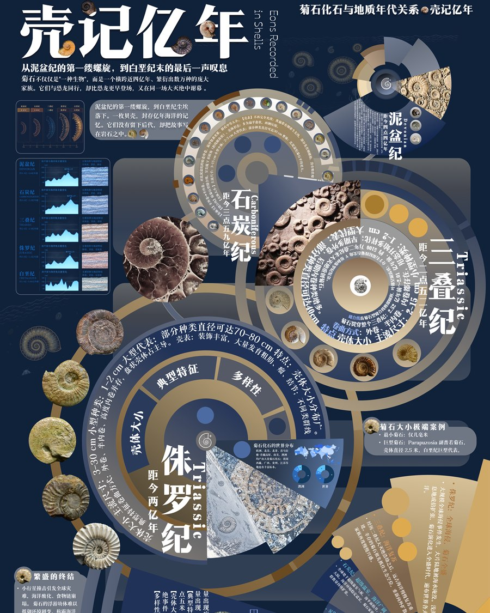
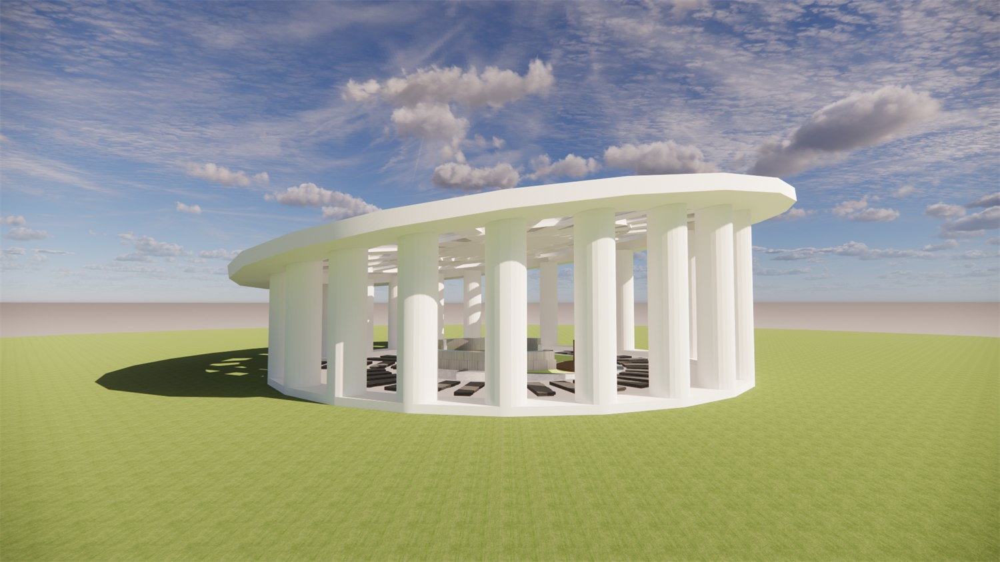

FILE 00 HUANG ZILIN — HIFA ART × TECHNOLOGY
在技术与艺术的
交界处建造
湖北美术学院艺术与科技专业在读。把代码当画笔，把光、材质与数据当颜料， 在界面、装置与影像之间，建造能被看见、能被触碰的系统。
自述MANIFEST

ID-01
我不把界面当装饰，
而是把它当作一台可阅读的机器。
我是黄子林，湖北美术学院艺术与科技专业在读。关注的是「信息如何被感知」： 把复杂的系统拆成能被读懂的层级，用版式、刻度、标记与留白建立秩序， 再让一处高饱和的颜色负责说话。
课程之外，我用 TouchDesigner 做声音与手势的实时交互，用 Processing 写生成图形， 用 SketchUp 与 Enscape 把叙事推到空间里，也动手做实体模型。 所有作品都在同一条线上：技术不是效果，而是让内容被读懂的那层结构。
- 克制纸与墨是主体，颜色是信号——只留一处。
- 秩序先立栅格与刻度，再谈风格。
- 可读中文负责阅读，英文负责结构。
- 利落动效 0.2–0.3 秒，硬收尾，不回弹。
作品档案ARCHIVE
能力模组MATRIX
六个节点对应五项能力与作品档案：拖拽旋转，悬停查看，点击定位。
履历日志LOG
-
2026
工作营
联合工作营 · 《心跳回响》《秋林拾光》
完成情绪识别交互装置与湖畔场景设计两组联合作品，从概念、搭建到展陈叙述全程参与。
-
2026
课程
《声涡掌御》· 可视化交互与艺术媒体
用 TouchDesigner 搭建音频特征与粒子系统的映射，接入摄像头手势识别，完成实时影像与展板输出。
-
2026
课程
《壳记忆年》· 信息可视化双联
以菊石化石为对象的两张展板：一张做时间与演化的编码，一张讲埋藏与矿化的流程。
-
2026
课程
开源编程 · 生成花纹
Processing 参数化练习：把坐标、正弦波与色彩映射写成可复用的生成系统。
- 2025课程
《江城寻味》· 空间信息应用
用 Mapbox GL JS 建立武汉美食图层与真实坐标数据，完成 2D/3D 双态地图、分类导航与路线动画。
-
2025
课程
《年轮之誓》· 空间建构
婚礼仪式空间：从社会学调研、概念叙事到平立剖与 Enscape 渲染的完整方案。
-
2025
课程
空间建造 · 微缩场景模型
椴木、苔藓与环氧树脂的实体搭建，用 1:50 的比例验证材料与尺度。
-
2024
起点
进入湖北美术学院 · 艺术与科技
开始同时学画画与写代码：图形、材质、空间与交互，慢慢长成一套自己的工作方式。
建立联络LINK
想看完整项目，
或者聊聊合作？发一段信号过来。
